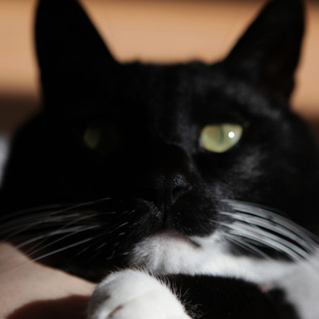

About Jaeky

I always consider myself as a creator and a world citizen.
I grew up in Multiple citiesand had many experiences in different areas.
After i graduated from BFA Computer art, School of Visual arts,
I work as a 3D Graphic Designer in New York.
Beside my major, I have many other skills
in photography, video editing, and art psychotherapy.